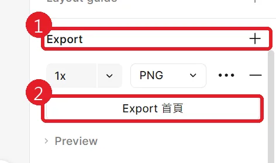

遊戲設計學 · W13 · Figma 2/3Desain Game · W13 · Figma 2/3
在 Figma 補畫流程裡的其他畫面Menggambar layar lain dalam alur proses di Figma
最後更新：Terakhir diperbarui: 2026-11-15 15:03
一個小遊戲至少有三種畫面：開始（玩家一打開看到什麼）、玩（做事的時候長什麼樣）、結果（做完看到什麼）。你的走讀遊戲畫面已經有一張了。這一週用 Figma 再補畫至少一張，讓你的遊戲有「前後」，下週會把它們接起來。Sebuah game kecil setidaknya memiliki tiga jenis layar: 開始 (Mulai) (apa yang dilihat pemain saat pertama kali membuka), 玩 (Bermain) (seperti apa tampilannya saat beraktivitas), 結果 (Hasil) (apa yang dilihat setelah selesai). Layar game tur jalan kaki Anda sudah ada satu. Minggu ini gunakan Figma untuk menggambar tambahan setidaknya satu layar lagi agar game Anda memiliki 「alur awal dan akhir」, minggu depan kita akan menghubungkannya.
盡量在課堂上做完；期限有兩週，回家可以補。做到哪一階都可以交。Usahakan selesai di kelas; batas waktu ada dua minggu, bisa disusulkan di rumah. Selesai sampai tahap mana pun boleh dikumpulkan.
概覽概覽 (Ikhtisar)W13 Figma 2/3W13 Figma 2/3
| 要交什麼Apa yang harus dikumpulkan | Figma 連結（確認別人打得開）、你新畫的畫面的 PNG（至少一張），再加一張「繳交檢核」截圖Tautan Figma (pastikan orang lain bisa membukanya), PNG layar yang baru Anda gambar (setidaknya 1 lembar), ditambah satu tangkapan layar 「繳交檢核 (Pemeriksaan Pengumpulan)」 |
| 大約多久Kira-kira berapa lama | 40～50 分鐘40～50 menit |
| 開放與截止Pembukaan dan batas waktu | 12/02（三）19:05 開放，12/16（三）19:05 截止。期限一到就不能再交Dibuka 02/12 (Rabu) 19:05, ditutup 16/12 (Rabu) 19:05. Setelah tenggat waktu lewat tidak bisa mengumpulkan lagi |
| 做完接哪一份Setelah selesai lanjut ke mana | W14：AI Studio 3/3，把你的畫面接成一輪、找人試用、改版。W14: AI Studio 3/3, menghubungkan layar Anda menjadi satu putaran, mencari orang untuk mencoba, melakukan revisi. |
| 先講清楚Jelaskan terlebih dahulu | 不要在畫面裡放真實姓名、學號、電話，或其他同學的個人資料。Jangan memasukkan nama asli, nomor mahasiswa, nomor telepon, atau data pribadi teman sekelas lainnya di dalam layar. |
步驟步驟 (Langkah-langkah)四步做完這一份Selesaikan bagian ini dalam empat langkah
每一步是一張卡片，點標題可以收合或展開。Figma 的複製、改字、改色，W10 的學習單都寫了，這裡不重複；手機版 Figma 只能看，畫畫面請用電腦或同組同學的電腦。Setiap langkah adalah sebuah kartu, klik judul untuk menutup atau membuka. Menyalin, mengubah teks, dan mengubah warna di Figma sudah ditulis di lembar kerja W10, tidak diulang di sini; Figma versi ponsel hanya untuk melihat, untuk menggambar layar silakan gunakan komputer atau komputer teman satu kelompok.
1想好要補哪一張Pikirkan layar mana yang ingin ditambahkan約 5 分鐘Sekitar 5 menit
回答三個問題：玩家一打開看到什麼（開始）？做事的時候畫面長什麼樣（玩）？做完看到什麼（結果）？你已經有一張了，挑還缺的那一種，至少補一張。這一步只要想，手機也可以做。Jawab tiga pertanyaan: Apa yang dilihat pemain saat membuka (mulai)? Seperti apa tampilan layar saat beraktivitas (bermain)? Apa yang dilihat setelah selesai (hasil)? Anda sudah punya satu lembar, pilih jenis yang masih kurang, tambahkan setidaknya satu lembar. Langkah ini hanya perlu berpikir, ponsel juga bisa melakukannya.
做完的樣子：Tampilan setelah selesai:你知道要補哪一種畫面。Anda tahu jenis layar mana yang perlu ditambahkan.
2在同一個 Figma 檔裡畫新畫面Menggambar layar baru di file Figma yang sama約 25 分鐘Sekitar 25 menit
打開你 W10 的 Figma 檔，在旁邊再複製一個畫面（或用 F 拉一個 390 × 844 的新畫面框），改成你要補的那一種：標題、文字、一個按鈕、顏色，和你第一張看起來是同一個遊戲。畫面上只放練習用的資料。Buka file Figma W10 Anda, salin layar lain di sampingnya (atau gunakan F untuk menarik Frame layar baru berukuran 390 × 844), ubah menjadi jenis yang ingin Anda tambahkan: judul, teks, satu tombol, warna, agar terlihat seperti game yang sama dengan lembar pertama Anda. Di layar hanya letakkan data untuk latihan.
做完的樣子：Tampilan setelah selesai:Figma 檔裡多了至少一張新畫面，和第一張風格一致。Di dalam file Figma bertambah setidaknya satu layar baru, dengan gaya yang konsisten dengan lembar pertama.
風格一致的小技巧：用和第一張一樣的字級（內文 14 以上）和同一組顏色；每張畫面的標題放在差不多的位置。Tips agar gaya konsisten: gunakan ukuran font yang sama dengan lembar pertama (teks isi 14 ke atas) dan palet warna yang sama; letakkan judul setiap layar di posisi yang kurang lebih sama.
3匯出成 PNGExport menjadi PNG約 5 分鐘Sekitar 5 menit
每一張新畫面都用 Export 匯出：左邊 Layers 點畫面的名字，右邊面板最底下按 Export 旁的「＋」（圖中 1），再按「Export ＜畫面名稱＞」（圖中 2）。不要自己截螢幕。畫面名稱寫清楚，例如「開始」「結果」，下週要用。Setiap layar baru diekspor menggunakan Export: klik nama layar di Layers sebelah kiri, tekan tanda「＋」di samping Export pada bagian paling bawah panel kanan (gambar 1), lalu tekan「Export
做完的樣子：Tampilan setelah selesai:你有一組 PNG，檔名是畫面名稱。Anda memiliki satu set PNG dengan nama file berupa nama layar.

4確認別人打得開，複製連結Pastikan orang lain bisa membuka, salin tautan約 5 分鐘Sekitar 5 menit
按右上角藍色的 Share（分享），「Anyone」那一列右邊要是「can view（可以檢視）」，不是 can edit。確認後按「Copy link（複製連結）」，用無痕視窗貼上連結，打得開才算。Klik tombol biru Share di sudut kanan atas, baris 「Anyone」 di sebelah kanan harus 「can view」, bukan can edit. Setelah dipastikan, tekan 「Copy link」, tempel tautan di jendela penyamaran (incognito), baru dianggap valid jika bisa dibuka.
做完的樣子：Tampilan setelah selesai:你有一條打得開的 Figma 連結。Anda memiliki satu tautan Figma yang bisa dibuka.

出處標示欄出處標示欄 (Kolom Atribusi Sumber)存版本時填三格Isi tiga kolom saat menyimpan versi
每週至少寫一次。很短就好，目的是讓你自己看清楚哪些是你決定的。在這一頁下方的填寫區填。Tulis setidaknya seminggu sekali. Cukup singkat saja, tujuannya agar Anda sendiri melihat dengan jelas mana yang Anda putuskan. Isi di area pengisian di bagian bawah halaman ini.
- 這一版裡，哪些部分交給了 AI？Dalam versi ini, bagian mana saja yang diserahkan ke AI?從填寫區挑（可以多個）；沒有用 AI 就勾「沒有用 AI」。Pilih dari area pengisian (bisa lebih dari satu); jika tidak menggunakan AI, centang 「沒有用 AI (Tidak menggunakan AI)」.
- 這一版裡，哪一兩處是你自己決定的？Dalam versi ini, satu atau dua bagian mana yang Anda putuskan sendiri?一句話就好；想不到就寫「沒有」。Cukup satu kalimat; jika tidak terpikirkan tulis 「沒有 (Tidak ada)」.
- 本週那一句。Kalimat minggu ini.填寫區會顯示題目，照題目用一句話回答。Area pengisian akan menampilkan pertanyaan, jawab dengan satu kalimat sesuai pertanyaan.
「為什麼這樣決定」那一格可以不填。你寫的內容只留在自己的瀏覽器。Kolom 「為什麼這樣決定 (Mengapa memutuskan demikian)」 boleh tidak diisi. Konten yang Anda tulis hanya tersimpan di peramban Anda sendiri.
先綁定你的編號，這裡才會出現填寫區。Tautkan nomor Anda terlebih dahulu, baru area pengisian akan muncul di sini.
檢核檢核 (Pemeriksaan)交之前，自己對照四點Sebelum mengumpulkan, periksa sendiri empat poin ini
- 1多了至少一張新畫面。Bertambah setidaknya satu layar baru.和第一張看起來是同一個遊戲。Terlihat seperti game yang sama dengan lembar pertama.
- 2有 PNG。Ada PNG.用 Export 匯出的，不是截圖。Diekspor menggunakan Export, bukan tangkapan layar.
- 3別人打得開。Orang lain bisa membukanya.Share 裡 Anyone 那一列是 can view，用無痕視窗貼上連結打得開。Baris Anyone di dalam Share adalah can view, tempel tautan di jendela penyamaran dan bisa dibuka.
- 4填了出處標示欄、附了檢核截圖。Sudah mengisi kolom atribusi sumber, sudah melampirkan tangkapan layar pemeriksaan.填寫區寫了三格，把「繳交檢核」畫面截圖，連同 Figma 連結和 PNG 一起交到 flipclass。Isi tiga kolom di area pengisian, ambil tangkapan layar layar 「繳交檢核 (Pemeriksaan Pengumpulan)」, kumpulkan bersama dengan tautan Figma dan PNG ke flipclass.
怎麼交：到 flipclass 這份作業，貼上 Figma 連結並上傳 PNG 和檢核截圖。連結打不開，視同未繳交。期限一到就不能再交，來不及請先跟老師說。Cara mengumpulkan: Buka tugas ini di flipclass, tempel tautan Figma serta unggah PNG dan tangkapan layar pemeriksaan. Jika tautan tidak bisa dibuka, dianggap belum mengumpulkan. Setelah tenggat waktu lewat tidak bisa mengumpulkan lagi, jika tidak sempat silakan beritahu guru terlebih dahulu.
卡住了卡住了 (Mengalami Kendala)常見的卡住與解法Kendala Umum dan Solusinya
- 不知道補畫什麼Tidak tahu harus menggambar tambahan apa
- 回答三個問題：玩家一打開看到什麼（開始）？做事時畫面長什麼樣（玩）？做完看到什麼（結果）？Jawab tiga pertanyaan: Apa yang dilihat pemain saat membuka (mulai)? Seperti apa tampilan layar saat beraktivitas (bermain)? Apa yang dilihat setelah selesai (hasil)?
- 文字改不了Teks tidak bisa diubah
- 點一下之後再快速雙擊，連按兩三次，直到出現閃爍的游標。Klik sekali lalu klik ganda dengan cepat, tekan 2–3 kali berturut-turut hingga muncul kursor yang berkedip.
- Figma 檔打不開、連結失效File Figma tidak bisa dibuka, tautan tidak valid
- 檢查 Share 裡 Anyone 是 can view；再試一次無痕視窗。Periksa apakah Anyone di dalam Share adalah can view; coba lagi di jendela penyamaran.
- Share 裡看不到「Anyone」Tidak melihat 「Anyone」 di dalam Share
- 代表現在不是公開的。把存取改成「Anyone」，右邊選「can view」。Menandakan bahwa saat ini tidak bersifat publik. Ubah akses menjadi 「Anyone」, di sebelah kanan pilih 「can view」.
- 找不到下載的 PNGTidak menemukan PNG yang diunduh
- 到瀏覽器右上角的下載圖示找；檔名就是你的畫面名稱。Cari di ikon unduhan di sudut kanan atas peramban; nama file adalah nama layar Anda.